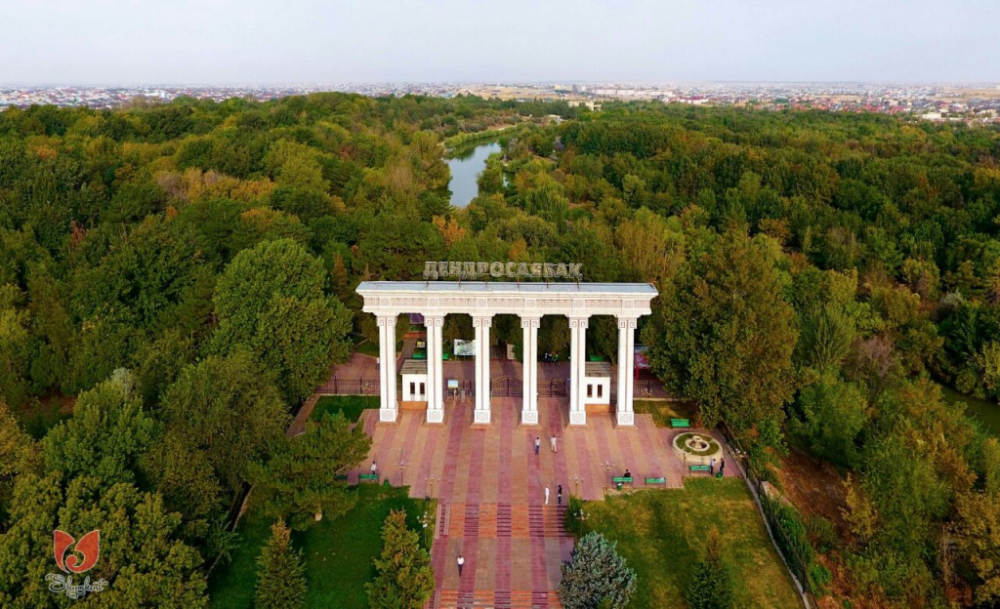
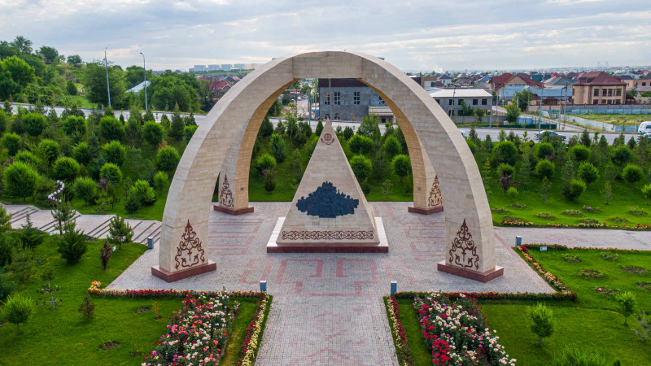
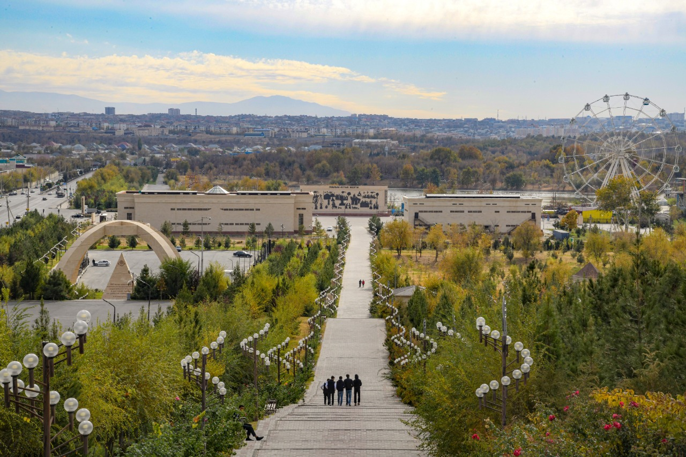
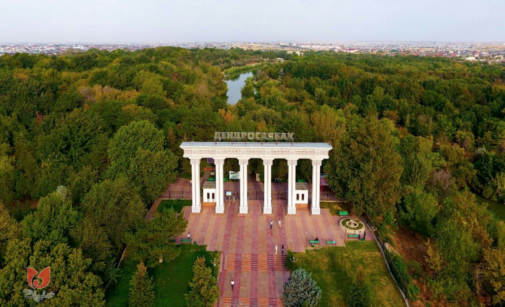
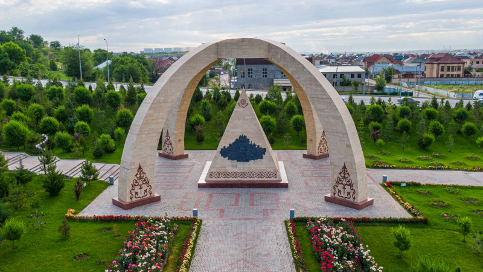
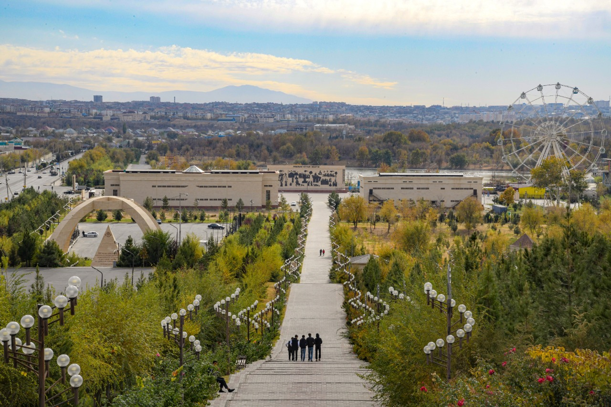
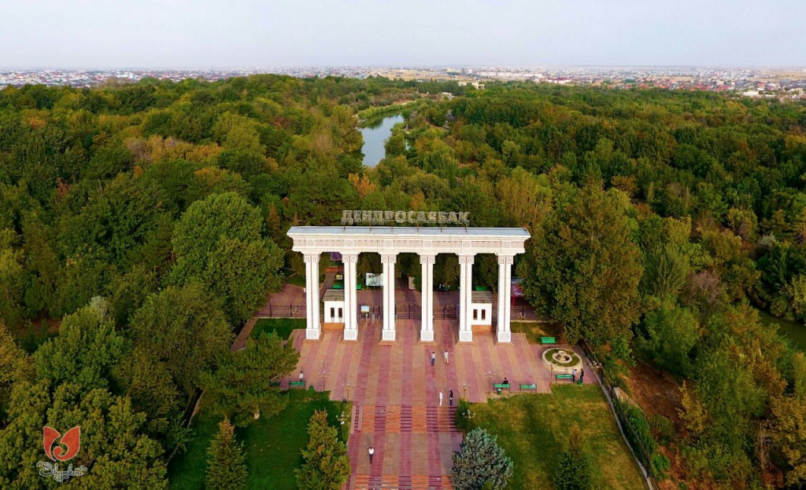
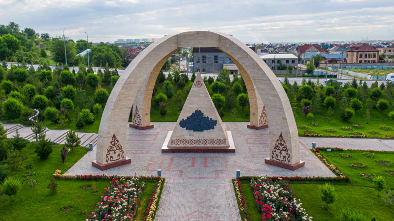
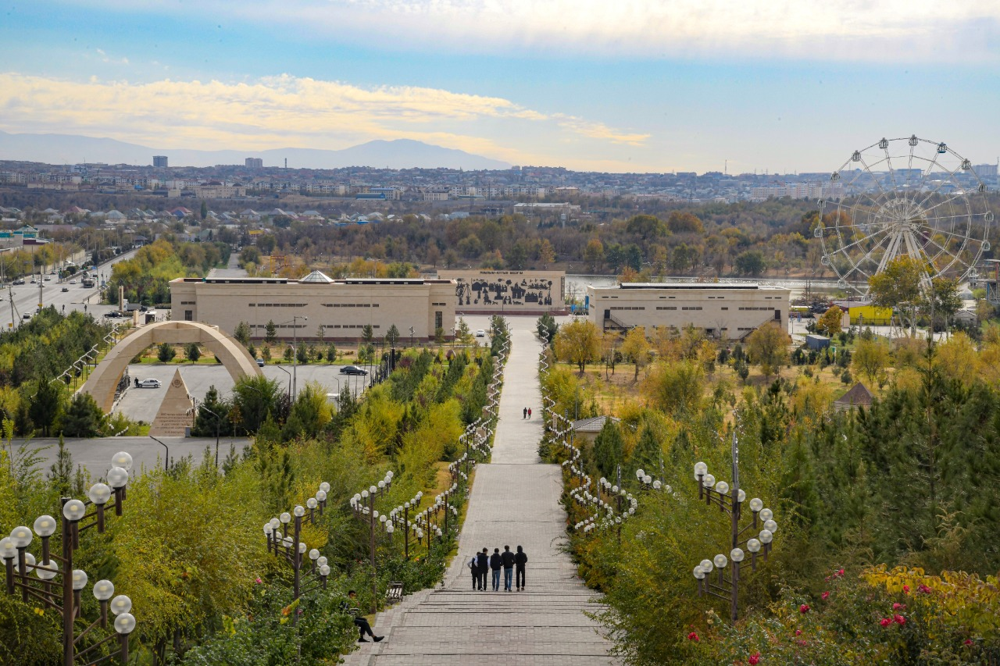

Shymkent is an administrative center of the South Kazakhstan region and one of the largest cities in Kazakhstan. Known from ancient times as a flourishing city on the Great Silk Road, nowadays Shymkent is the largest city in Kazakhstan in terms of area and is known as a heart of the Southern Kazakhstan. The city’s name is translated as ‘a garden city’, and if you come here, you will definitely understand why: the city is a real oasis in the middle of vast steppes.



Shymkent is full of both historical landmarks and entertainment places. You can learn more about must-visit places by clicking the link above